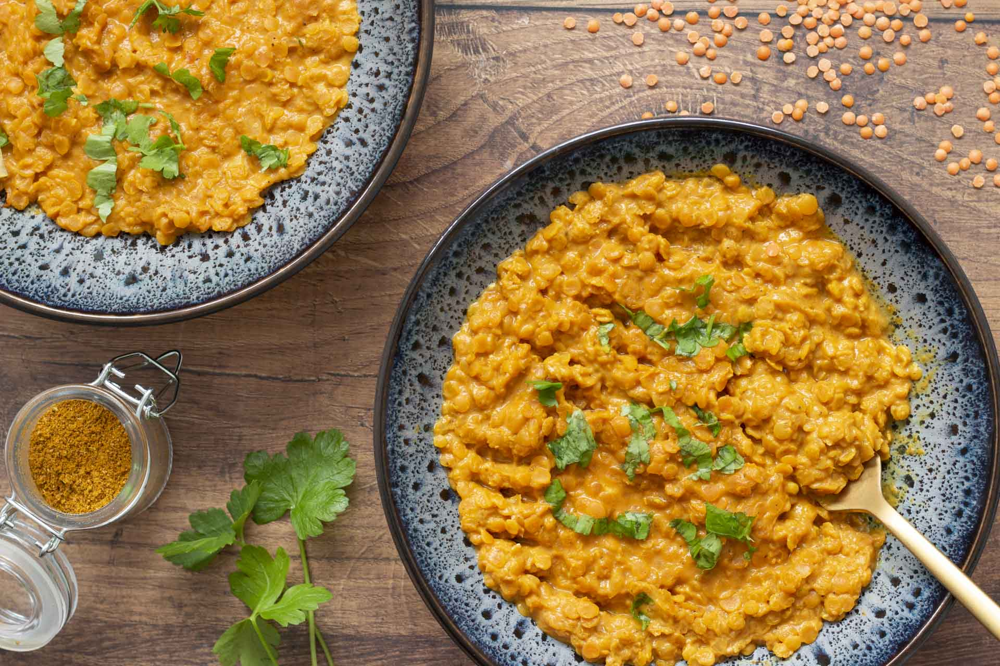

Dahl de lentilles corails
>

Plat traditionel indien à base de lentilles et d'épices
Ingrédients
- 250 g de lentilles corail
- 250 g d’eau
- 240 g de lait de coco
- 200 g de purée de tomate
- 1 oignon
- 1 cuillère à soupe de curry
- 1 cuillère à café de gingembre
- Sel
Etapes de préparation
- Rincez les lentilles puis égouttez-les.
- Pelez puis émincez l’oignon et l’ail. Faites les revenir 2 minutes avec un filet d’huile d’olive dans une poêle ou une casserole.
- Ajoutez vos lentilles corail, la purée de tomate, l’eau, le lait de coco et les épices. Salez et mélangez l’ensemble des ingrédients.
- Faire cuire 30 minutes à couvert sur feu moyen en remuant de temps en temps. Ajoutez si besoin un peu d’eau en cours de cuisson pour éviter que les lentilles accrochent.
- Servir bien chaud avec quelques feuilles de persil ou de coriandre.